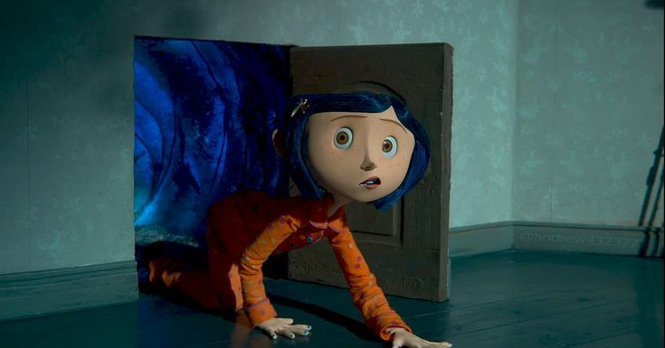
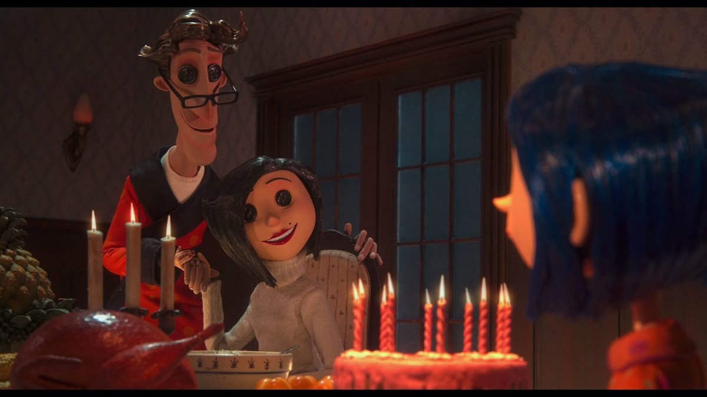
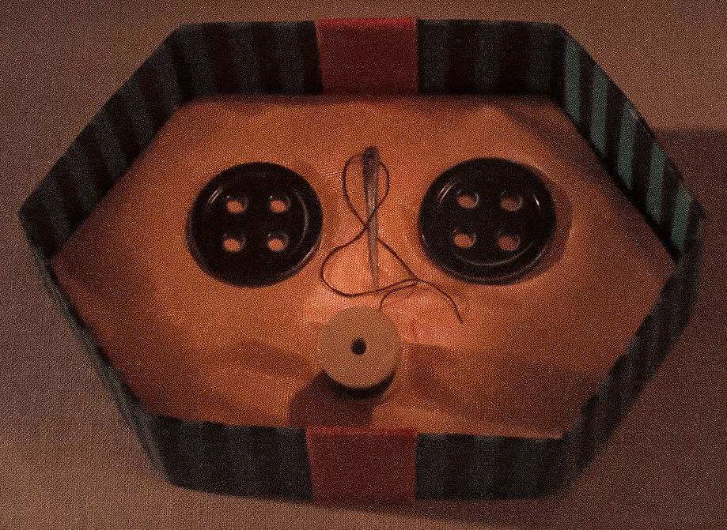
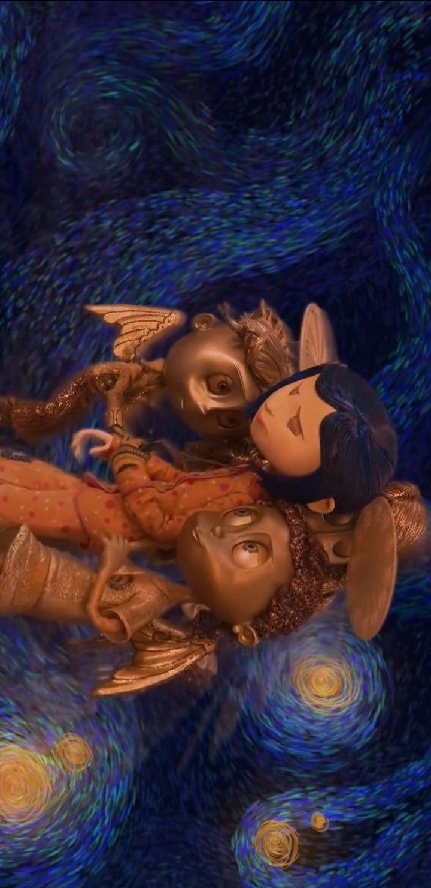
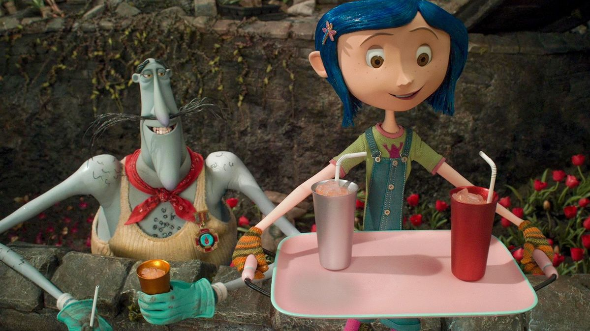

In Coraline, a young girl, named Coraline, moves to a new house in a gloomy and boring city. Her parents were engrossed in work, and didn’t give her much attention. Then, one night, she discovers a little door. When she opened the door, she found it had a portal to a house, strangely similar to her own.

Not only was the world more vibrant and better than the one she lived in, but the people in this "Other World" were better too, including her parents. The Other Mother, and Other Father had button eyes, which one of the things this movie is known for, and they wanted Coraline to stay permanently in the Other World, promising her that they would love her forever and care for her nicely.

They told her, that if she wanted to stay in the Other World forever, she would have to sew buttons onto her own eyes.

Coraline quickly realizes that this world isn't what it seems, and that it is a trap designed by the Other Mother. Coraline decides to escape, but when she returns to her reality, she realizes that the Other Mother has kidnapped her real parents, forcing Coraline to return to the Other World in an effort to rescue them. Coraline returns to the Other World, embarking on a quest to free her parents, as well as the souls of the children that have fallen victim to the Other Mother's traps, so the souls of the children can at last be free. Later in the story, when Coraline outsmarts the Other Mother and escapes the Other World, she locks up the door to the other world with the only key, and drops it down a well nearby her home. It is theorized that this well is deep enough to reach the other world, meaning that if that were true, Coraline would have just been returning the key to the Other Mother.

The film finishes on a happy note, with Coraline in the garden in front of her home, bonding with her family and neighbors. Coraline teaches an important lesson about loving and being grateful for your family, and being careful what you wish for.

Personally, Coraline is one of my favorite movies of all time, and never fails to make it in my top 3. The animations, set, and characters are very beautifully crafted. The plot is clever, but not overdone and teaches valuble lessons of gratefulness. In my opinion, this movie is more unsettling than scary, and as someone who HATES scary movies, this one was on the lighter side! If I were to rate this movie out of 5 stars, I would give it a solid 4.8, because while the execution of the plot was flawless and the filming was incredible, it freaked me out when I was hearing about it as a kindergartener so I have to dock a bit for that. Otherwise, nothing to say; absolute cinema!